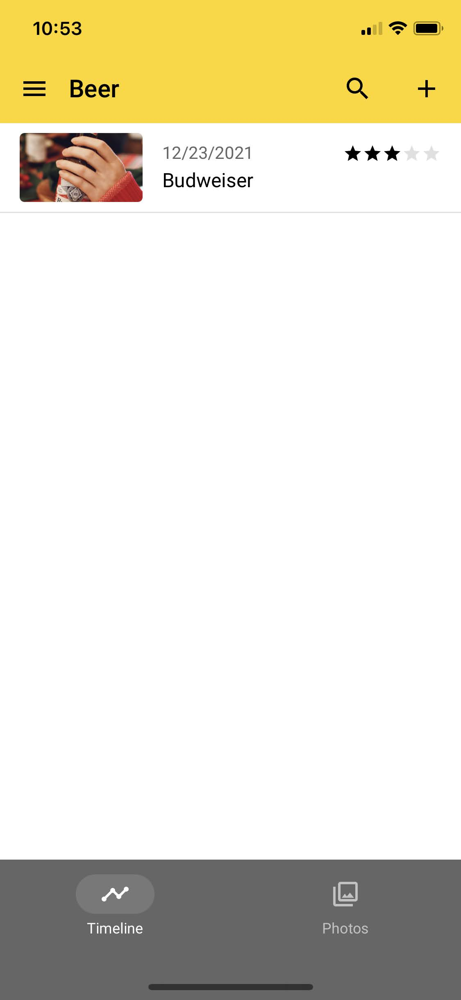
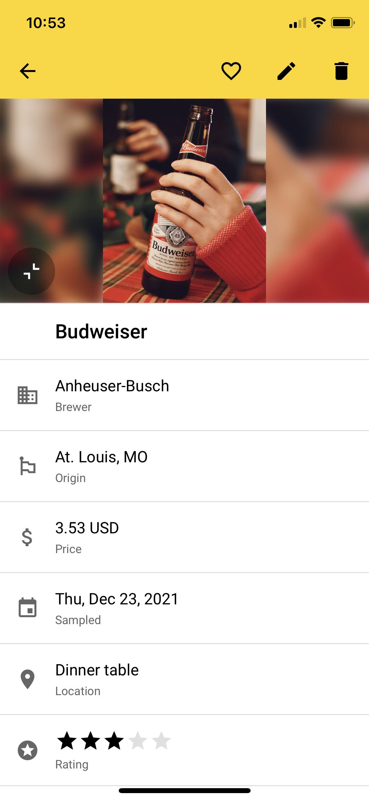
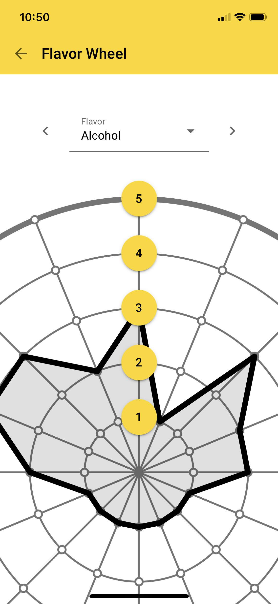
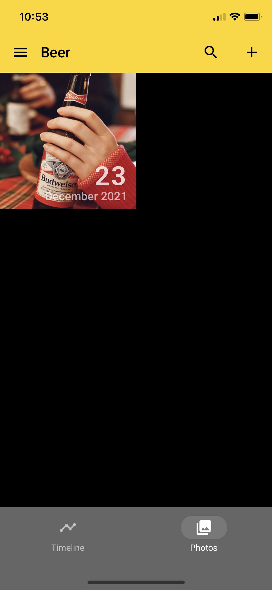

Flavors
Features
Visualize
Try Now
For People With A Mouth
Capture flavor moments - burgers to wine - with AI that helps you remember, visualize, and elevate every bite.
Start Your Free Journey




The details for every flavor have been carefully curated to capture the most important aspects of your experience.
- Beer
- Cannabis
- Cheese
- Cigars
- Chocolate
- Coffee
- Hot Sauce
- Scotch
- Tea
- Whiskey
Want to request a yummy flavor that you enjoy? Let me know!
Head on over to the app. Make a few entries. Create a free account for advanced features like data sychronization.
Record how you experience flavors. Take off the training wheels. AI recommendations help you grow as an aficionado.
Was it the '98 or '99 you liked? No more forgotten flavors; impress friends and family with the perfect pairing.
Collect 16 (or more!) dimensions of information on the innovative flavor wheel. A comprehensive analytics view shows a collection of statistics, all your flavor wheel entries on one wheel, and AI-powered recommendations.
It has been said that a picture is worth a thousand words. Attach photos to each entry. View them all in the photo view.
Knowing where you had that favorite flavor can help you find it again down the road. Location tagging to the rescue!
Discover how the weather changes your taste. Automatically record the current weather for your location.
Broke your phone? Made an upgrade? Securely backup all your content to the cloud for safe keeping.
Access your content across smartphone, tablet, and desktop devices. Your entries follow you everywhere you need them.
Comprehensive data analysis, paired with AI-powered suggestions help you to find flavors similar to what you like.
"I never realized how much I was missing until I started recording flavors. Now I can actually see my palate evolving, and it makes every meal feel more intentional."
"The AI suggestions nailed it - I discovered pairings I never would have thought of. It feels like having a personal flavor coach in my pocket."
"I used to forget the details of my favorite strains, but now I can track flavor, place, and even the weather. It’s like keeping a map of my experiences."
By writing down what you taste, you build awareness of flavor details you might otherwise overlook. This practice sharpens your palate and helps you to revisit flavors you enjoy.
Unlike a calorie tracker or food log, Flavor Awesome is about taste - not nutrition or dieting. It is designed to help you explore and enjoy the sensory side of eating.
AI is used to analyze your flavor notes to spot patterns in your preferences. It then suggests new foods, pairings, or experiences you’re likely to enjoy based on your unique palate.
Not at all - but it could make you into one! Flavor Awesome is for anyone who enjoys food and wants to be more mindful about taste, whether casual or expert.
Yes. Flavor Awesome is not a dietary or weight loss plan. It is focused on flavor and personal taste development. What or how you choose to eat is up to you.
Absolutely. Your flavor notes are yours alone - I do not sell your data, and you stay in control of your personal flavor journey.
Develop Your Palate
- No downloads
- No accounts
- Complete privacy
- Free forever
- Premium sync available